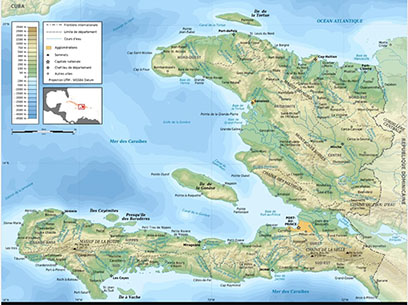
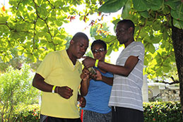
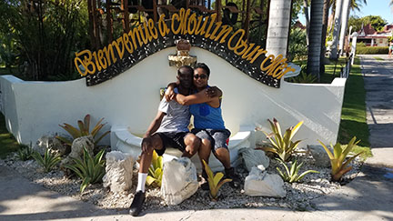

I was born in 1967 in the vibrant coastal town of Cabaret, Haiti. 
Nestled in the Arcahaie Arrondissement of the Ouest department, Cabaret.
It is a picturesque commune known for its rich culture and stunning landscapes.
As a devoted music lover, my heart swells with joy whenever I attend a concert by my favorite band, Tropicana.
I eagerly make it a point to attend every gala they host during their tours in Haiti.

